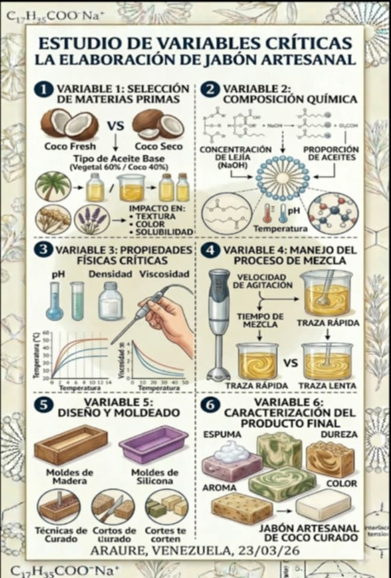
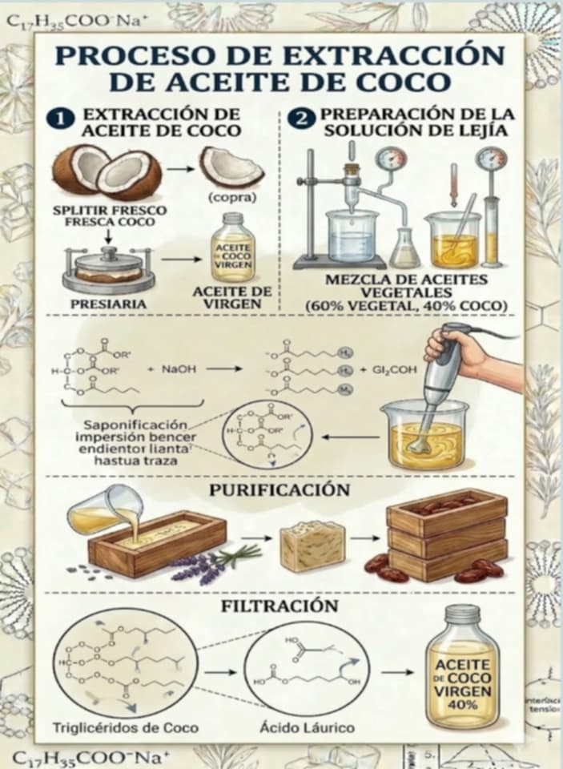
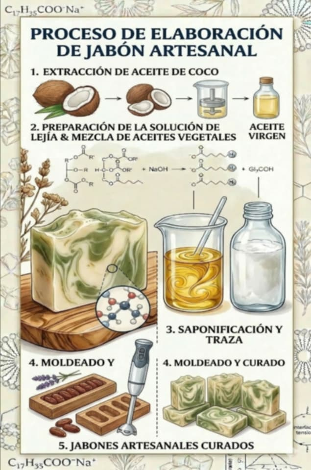

El manejo de residuos sólidos y líquidos es uno de los mayores retos del siglo XXI. En las zonas urbanas, la disposición final del aceite vegetal usado (AVU) es especialmente crítica, ya que un litro de aceite puede contaminar hasta mil litros de agua potable, formando películas superficiales que impiden el intercambio de oxígeno en los ecosistemas acuáticos (Agencia de Protección Ambiental de 2020).
Paralelamente, la industria de jabones comerciales convencional depende en gran medida de tensioactivos sintéticos derivados del petróleo, los cuales pueden ser agresivos con el medio ambiente y la salud de la piel. Frente a esta problemática dual, la química verde emerge como una alternativa viable. Este proyecto propone el desarrollo de un jabón artesanal que, mediante el reciclaje del aceite de cocina, mitiga un problema ambiental, y al combinarlo con aceite de coco virgen, aprovecha sus propiedades antibacterianas y espumantes.
Resumen del proyecto: La presente investigación aborda la problemática del desecho de aceites vegetales usados (AVU) y la búsqueda de alternativas de higiene de bajo costo y alta eficacia. El objetivo principal es la elaboración de un jabón artesanal utilizando una mezcla lipídica optimizada: 60% aceite vegetal reciclado (AVU) y 40% aceite de coco extraído artesanalmente. Se emplea el método de saponificación en frío, calculando el índice de saponificación específico para esta mezcla. Los resultados esperados incluyen un producto con un pH balanceado para limpieza doméstica (9-10), una alta capacidad espumante gracias al aporte del ácido láurico del coco, y una textura firme que facilite su uso y comercialización, contribuyendo así a una reducción significativa de la huella hídrica personal y fomentando un modelo de economía circular.
Descripción: En numerosas zonas urbanas de Venezuela y Latinoamérica, el aceite vegetal usado (AVU) carece de un protocolo de gestión adecuado. Comúnmente, es vertido por el fregadero, llegando a las alcantarillas y cuerpos de agua. Esta práctica genera graves problemas: obstrucción de tuberías, proliferación de vectores, y contaminación del agua potable. A pesar de que existen métodos para su transformación, como la producción de jabón, la falta de protocolos caseros seguros y eficientes limita su aprovechamiento a gran escala. Además, el jabón producido únicamente con aceite reciclado suele presentar deficiencias organolépticas, como baja capacidad espumante, textura blanda o mal olor, lo que genera rechazo en el consumidor y desincentiva el reciclaje.
Formulación del problema: ¿En qué medida la combinación de una base lipídica del 60% de aceite vegetal reciclado y 40% de aceite de coco virgen mejora las propiedades de dureza, solubilidad y capacidad espumante en comparación con un jabón de reciclaje puro, manteniendo un proceso de bajo costo y alto impacto ambiental?
General: Desarrollar un jabón artesanal de alta eficiencia mediante la técnica de saponificación en frío, integrando aceite vegetal reciclado y aceite de coco artesanal en una proporción 60/40.
"La integración de un 40% de aceite de coco en la mezcla lipídica compensará las deficiencias estructurales del aceite vegetal reciclado, produciendo un jabón con un índice de espuma 30% superior y una dureza óptima para el uso doméstico, en comparación con un jabón elaborado únicamente con AVU."
Independiente Proporción 60% AVU / 40% coco
Dependientes pH, dureza, espuma, poder desengrasante
Controladas pureza NaOH, Tª (40-45°C), tiempo curado, agua destilada
Lote experimental: 60% AVU + 40% aceite de coco. Lote control: 100% AVU. Pesaje balanza digital (±1g).
Solución 1% (1g/100ml agua dest.), agitación 30s en probeta 250ml. Medición altura espuma (cm).
Prueba presión digital estandarizada (escala Likert 1-5). Panel evaluadores.
1g jabón + 10ml agua dest., potenciómetro (semanal). Rango aceptable 8-10.
Control Tª 40-45°C en fases aceite y lejía. Termómetro digital.
| Parámetro | Control (100% AVU) | Experimental (60/40) |
|---|---|---|
| Tiempo de traza | 15-20 min | 5-8 min |
| pH (24h) | 13.2 | 13.5 |
| pH (4 semanas) | 9.8 | 9.5 |
| Dureza (1-5) | 2 (blando) | 4 (firme) |
| Altura espuma | 5 cm | 8 cm |
| Estabilidad espuma | 2 min | >3 min |
Análisis esperado: La mejora en dureza y espuma se atribuye al ácido láurico del coco. El pH final desciende ligeramente (9.5 vs 9.8). Se supera la hipótesis de espuma (+60%).
Se espera validar que la mezcla 60/40 AVU-coco es efectiva para producir jabón de alta calidad. El aceite de coco compensa las debilidades del AVU. Se demuestra la viabilidad de transformar un residuo contaminante en producto de valor, con proceso de bajo costo y base científica.
| Aceite reciclado (600g) | $0.00 |
| Aceite de coco (400g) | $3.00 |
| NaOH (150g) | $1.00 |
| Agua destilada | $0.50 |
| Guantes / seguridad | $0.50 |
| TOTAL | $5.00 |
|---|
12.1 POSIBLE VARIABLES

PROCESO DE EXTRACCIÓN DE MINERALES 12.2

Elaboracion Teorica 12.3
